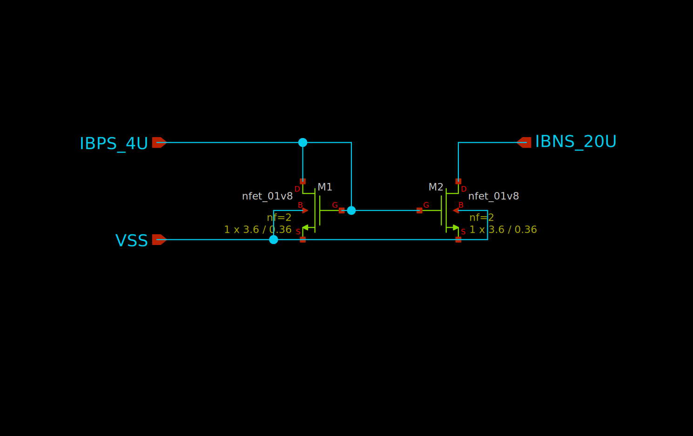
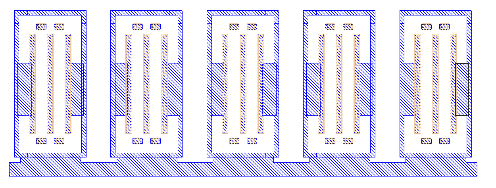
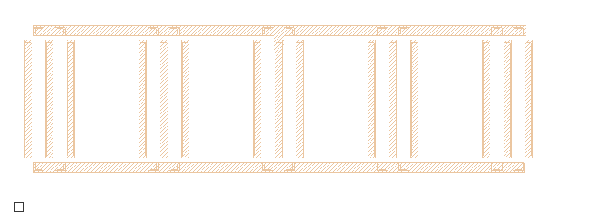
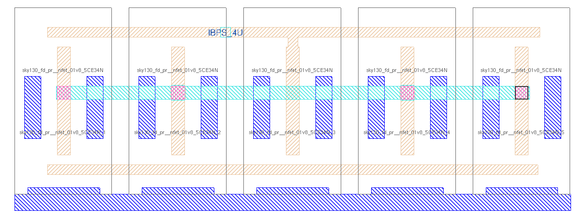
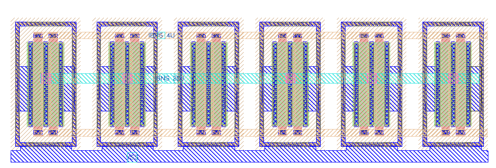

Carsten Wulff
I wanted to create a step by step “tutorial” for the flow. Both to debug the tech setup, and to make it easier for you to learn the tools. I use a simple current mirror as the example.
I’ve tagged the repo at each stage. That means you can checkout the 0.1.0 tag and do things yourself.
Make sure you follow the latest readme though, I’ve fixed bugs in the readme.
When you clone main, you can do
and then open the html file.
To checkout a specific stage, do
| Tag | Status | Comment |
|---|---|---|
| 0.1.0 | :white_check_mark: | Fix readme |
| 0.2.0 | :white_check_mark: | Made schematic |
| 0.3.0 | :white_check_mark: | Typical simulation |
| 0.4.0 | :white_check_mark: | Corner simulation |
| 0.5.0 | :white_check_mark: | Made layout |
| 0.6.0 | :white_check_mark: | DRC/LVS clean |
| 0.7.0 | :white_check_mark: | Extracted parasitics |
| 0.8.0 | :white_check_mark: | Simulated parasitics |
| 0.9.0 | :white_check_mark: | Updated README with simulation results |
| 1.0.0 | :white_check_mark: | All done |
| What | Lib/Folder | Cell/Name |
|---|---|---|
| Schematic | RPLY_EX0_SKY130NM | RPLY_EX0.sch |
| Layout | RPLY_EX0_SKY130NM | RPLY_EX0.mag |
| Signal | Direction | Domain | Description |
|---|---|---|---|
| IBPS_4U | Input | VDD_1V8 | Input bias current |
| IBNS_20U | Output | VDD_1V8 | Output current |
| VSS | Input | Ground |
| Parameter | Min | Typ | Max | Unit |
|---|---|---|---|---|
| Technology | Skywater 130 nm | |||
| AVDD | 1.7 | 1.8 | 1.9 | V |
| IBPS_20U | 16 | 21 | 27 | uA |
| Temperature | -40 | 27 | 125 | C |
For details see sim/RPLY_EX0
This repository was built in aicex, so if you want to try the tutorial from scratch, then you need aicex first.
Create a repository with the same name on your choosen git vendor (for example github)
cd rply_ex0_sky130nm
git remote add origin git@github.com:wulffern/rply_ex0_sky130nm.git
git branch -M main
git push -u origin mainOpen README.md in your favorite text editor and make necessary changes
All commands (except simulation) must be started from work/
cd work/
make xviewAdd IBPS_4U and IBPS_20U ports, the P and N in the name signifies what transistor the current comes from. So IBPS must go into a diode connected NMOS, and N will be our output, and go into a diode connected PMOS somewhere else
Use ‘Shift-I’ to open the library manager. Use the “sky130B/libs.tech/xschem” path. Open the “sky130_fd_pr” library. Find nfet_01v8.sym and place in your schematic.
Select the transistor by clicking on it, press ‘q’ to bring up the properties. Set L=0.36, W=3.6, nf=2 and press OK.
Select the transistor and press ‘c’ to copy it, while dragging, press ‘shift-f’ to flip the transistor so our current mirror looks nice. ‘shift-r’ rotates the transistor, but we don’t want that now.
Press ESC to deselect everything
Select ports, and use ‘m’ to move the ports close to the transistors.
Press ‘w’ to route wires.
Use ‘shift-z’ and z, to zoom in and out
Use ‘f’ to zoom full screen
Remember to save the schematic

Check that the netlist looks OK
In work/
I’ve made cicsim that I use to run simulations (ngspice) and extract results
Navigate to the rply_ex0_sky130nm/sim/ directory.
Make a new simulation folder
I would recommend you have a look at simcell_template.yaml file to understand what happens.
I’ve added quite a few options to cicsim, and it might be confusing. For reference, these are what the files are used for
| File | Description |
|---|---|
| Makefile | Simulation commands |
| cicsim.yaml | Setup for cicsim |
| summary.yaml | Generate a README with simulation results |
| tran.meas | Measurement to be done after simulation |
| tran.py | Optional python script to run for each simulation |
| tran.spi | Transient testbench |
| tran.yaml | What measurements to summarize |
The default setup should run, so
Delete the VDD source
Add a current source of 4uA, and a voltage source of 1V to IBNS_20U
IBP 0 IBPS_4U dc 4u
V0 IBNS_20U 0 dc 1Add the current in V0 to the plots
Add measurement of the current and VGS
let ibn = -i(v0)
meas tran ibns_20u find ibn at=5n
meas tran vgs_m1 find v(ibps_4u) at=5nRun simulation
and check that the output looks okish.
Often, it’s the measurement that I get wrong, so instead of rerunning simulation every time I’ve added a “–no-run” option to cicsim. For example
will skip the simulation, and rerun only the measurement. This is why you should split the testbench and the measurement. Simulations can run for days, but measurement takes seconds.
You should notice that the current is not 20uA. We need to fix the schematic to make that happen. Change the instance name of M2 to “M2[4:0]”, and rerun typical simulation. Remember to save the schematic.
Add the result specifications, for example
ibn:
src:
- ibns_20u
name: Output current
min: -20%
typ: 20
max: 20%
scale: 1e6
digits: 3
unit: uA
vgs:
src:
- vgs_m1
name: Gate-Source voltage
typ: 0.6
min: 0.3
max: 0.7
scale: 1
digits: 3
unit: VRe-run the measurement and result generation
Open result/tran_Sch_typical.html
Start Ngspice
Load the results, and view the vgs
Based on the waveform we can see that maybe the voltage and current is not completely settled at 5 ns.
Change the measurement to occur at 9.5ns
All commands should be run in sim/RPLY_EX0
Analog circuits must be simulated for all physical conditions, we call them corners. We must check high and low temperature, high and low voltage, all process corners, and device-to-device mismatch.
For the current mirror we don’t need to vary voltage, since we don’t have a VDD.
Open Makefile in your favorite text editor.
Change all instances of “Vt,Vl,Vh” and “Vl,Vh” to Vt
To simulate all corners do
where etc is extreme test condition and mc is monte-carlo.
Wait for simulations to complete.
Let’s say we want to check if the current has settled in our transient. We could extract the current at 9.0 ns and check that it’s roughly the same.
Add the following line to tran.meas
And add the parameter to tran.yaml
Now, as you saw, the simulations take quite a while, so we don’t want to rerun that. Instead do
If you’re lazy, like me, then you don’t want to spend time checking all the 9.5 ns numbers versus the 9 ns numbers. I’d much rather tell the computer how to do that.
It might be possible to do in ngspice, but sometimes a more complex tool is easier.
Open tran.py in your favorite editor, try to read and
understand it.
The name parameter is the corner currently running, for
example tran_SchGtAmcttTtVt.
The measured outputs from ngspice will be added to
tran_SchGtAmcttTtVt.yaml
Delete the “return” line.
Add the following line
Add the error to the result spec tran.yaml
err:
src:
- ibn_settl_err
name: Current settling error
typ: 0
min: -2
max: 2
scale: 1e9
digits: 3
unit: nA
Re-run measurements to check the python code
Run
Install pandoc if you don’t have it
Run
to generate a HTML slideshow that you can open in browser. Open the HTML file.
From the corner and mismatch simulation, we can observe a few things.
Open Magic VLSI
Navigate to design directory
Now brace yourself, Magic VLSI was created in the 1980’s. For it’s time it was extremely modern, however, today it seems dated. However, it is free, so we use it.
Try google for most questions, and there are youtube videos that give an intro.
Default magic start with the BOX tool. Mouse left-click to select bottom corner, left-click to select top corner.
Press “space” to select another tool (WIRING, NETLIST, PICK).
Type “macro help” in the command window to see all shortcuts
| Hotkey | Function |
|---|---|
| v | View all |
| shift-z | zoom out |
| z | zoom in |
| x | look inside box (expand) |
| shift-x | don’t look inside box (unexpand) |
| u | undo |
| d | delete |
| s | select |
| Shift-Up | Move cell up |
| Shift-Down | Move cell down |
| Shift-Left | Move cell left |
| Shift-Right | Moce cell right |
In the Window menu, turn grid on, set grid 0.5 um and turn on snap-to grid.
Select “Devices 1 - NMOS”. Match the parameters to schematic (W=3.6, L=0.36, fingers=2)
Unexpand, so it’s possible to select the device (shift-x)
Place cursor over the device and select (s)
Move cursor to somewhere else, and copy (c), it will then snap to grid.
Select the old device, and delete (d).
Copy 4 more devices for M2.
In the command window, type
Select a 0.5 um box below the transistors and paint the rectangle (middle click on locali)
Change grid to 0.1 um.
Connect guard rings to ground. Select a smaller box between guardring and the ground rectangle.
Select the rectangle, and copy to the other transistors
Connect the sources to ground.

All the gates are connected, so we can enter use the wire mode
It seems like the device generator adds too small m1 around the gate, so add a rectangle.
Press “space” to enter wire mode. Left click to start a wire, and right click to end the wire.
The drain of M1 transistor needs a connection to from gate to drain. We do that for the middle transistor.

Select a box on the left most transistor drain. Paint m1.
Unexpand all, use the wire tool to draw connections for the drains.
To add vias you can do “shift-left” to move up a metal, and “shift-right” to go down.

Select a box on a metal, and use “Edit->Text” to add labels for the ports.
The DRC can be seen directly in Magic VLSI as you draw.
To check layout versus schematic navigate to work/ and do
And you should see that it’s incorrect. I forgot one transistor of the current mirror, M2 was 5 devices.
Add the fith transistor and try again. It should still be incorrect.
Turns out that the Xschem interpretation of width is different than in Magic VLSI.
In xschem “W=3.6, nf=2” means that the device is actually 3.6 um wide, but has two fingers. In Magic “W=3.6, nf=2” means that the device is 7.2 um wide, and has fingers of 3.6 um.
The easiest way to fix it is to modify the schematic to match the layout.
Open the schematic, select M1, press q, and change “W=7.2”. Do the same for M2.
Now the layout should match the schematic.

With the layout complete, we can extract parasitic capacitance.
Check the generated netlist
Navigate to sim/RPLY_EX0. We now want to simulate the layout.
The default tran.spi should already have support for
that.
Open the Makefile, and change
VIEW=Sch to
VIEW=Lay Run
The simulation might not look right.
Open the work/lpe/RPLY_EX0_lpe.spi and
work/xsch/RPLY_EX0.spice and have a look at the .subckt
line.
For me, the ports were not the same order, which makes the simuation fail.
To fix it, open design/RPLY_EX0_SKY130NM/RPLY_EX0.mag in
your favorite text editor. Yes, the layout file is a text file!
Take a look towards the bottom, you’ll see
flabel metal1 4460 1360 4520 1420 0 FreeSans 320 0 0 0 IBPS_4U
port 1 nsew
flabel locali 4200 300 4280 380 0 FreeSans 320 0 0 0 VSS
port 2 nsew
flabel metal2 4520 980 4600 1060 0 FreeSans 320 0 0 0 IBNS_20U
port 3 nsewChange the numbers so we get the same port order as the schematic
flabel metal1 4460 1360 4520 1420 0 FreeSans 320 0 0 0 IBPS_4U
port 2 nsew
flabel locali 4200 300 4280 380 0 FreeSans 320 0 0 0 VSS
port 1 nsew
flabel metal2 4520 980 4600 1060 0 FreeSans 320 0 0 0 IBNS_20U
port 3 nsewOpen a new terminal, navigate to work/ and extract the parasitics again
Check the work/lpe/RPLY_EX0_lpe.spi again.
Run typical simulation.
Observer that now the difference between “ibps_20u” and “ibps_20u_9n” is a bit large.
Check the current waveform. Change the transient simulation to run a bit longer, and extract a bit later. 19.5 ns seem to work.
Navigate to sim/RPLY_EX0. Run all corners again
Open summary.yaml and add the layout files.
- name: Lay_typ
src: results/tran_Lay_typical
method: typical
- name: Lay_etc
src: results/tran_Lay_etc
method: minmax
- name: Lay_3std
src: results/tran_Lay_mc
method: 3stdOpen the README.md and have a look a the results.
If you find errors in this “tutorial”, then fork, fix, and send me a PR.